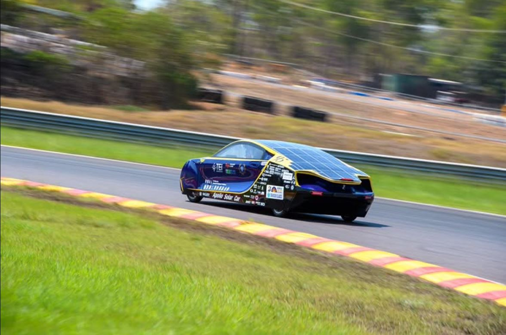
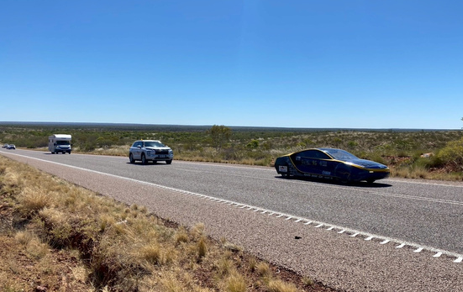

世界太陽能車挑戰賽 (WSC)
全球共有 6 大太陽能車賽事，分別在不同地域舉辦。其中，「世界太陽能車挑戰賽」(World Solar Challenge, WSC) 開辦已有 38 年歷史，挑戰全程 3000 公里。路途多為荒蕪區域，選手需面對白天高達 40°C 的高溫、強勁側風，甚至夜間的野生動物。這是全球頂尖且參賽國家隊伍最多的太陽能電動車賽事，也是檢驗綠能技術的最高殿堂。

🏁 3000 公里的征途：BWSC 2025
團隊參加 2025 年普利司通世界太陽能車挑戰賽 (BWSC 2025)，與來自世界各地的頂尖學子競爭與學習。這場由澳洲北部的達爾文 (Darwin) 出發，一路向南至阿德雷得 (Adelaide) 的道路賽，路程總長約 3,021 公里，是測試各車隊技術與意志力的終極舞台。

🔍 嚴格把關：道路前的安全檢查
競賽前，大會聘請專家、學者及監理人員進行嚴格的靜態與動態安全檢查。團隊在專業指導下不斷修正，確保車輛以最佳狀態上路。檢查項目包含：
- 機械五金分析與車輛設計報告
- 駕駛緊急逃生與電池保護裝置
- 高速緊急煞車與動態繞錐測試

🤝 路途中的夥伴：團隊合作
這是一場團體戰。除了太陽能車外，其餘成員分乘於車隊中的支援車輛，扮演偵查、前導、後衛與後勤等不同角色。大家相互合作，為太陽能車提供前進的助力，共同克服海內外繁瑣的測試程序與路程中的突發狀況。

❄️ 寒冬過後的暖陽：Apollo IX Plus
BWSC 2025 首次於澳洲冬末初春舉辦。阿波羅參加的 Cruiser 組不僅講求能耗，更引入「綠色主流」概念。吸取兩年前的經驗，我們對底盤與電力系統進行全面優化。
- Hidden Valley 賽車場奪下全場第九名、巡航組第二名
- 極具辨識度的外觀成為賽道焦點
- 面對冬季強烈側風、傾盆大雨與冰雹的極端氣候挑戰
雖然在距離終點僅剩 70 公里時因電量耗盡惜敗，最終名列 世界第四，但這段旅程見證了團隊在逆境中調整策略、克服困難的堅韌精神。